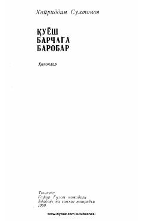

QBXayriddin Sultonovning hayotiy hikoyalardan iborat to'plami.
Ushbu kitob taniqli o'zbek yozuvchisi Xayriddin Sultonovning qalamiga mansub hikoyalar to'plamidir. Asarlarda insoniy munosabatlar, hayotiy haqiqatlar va turli taqdirlar ta'sirchan tarzda hikoya qilinadi.